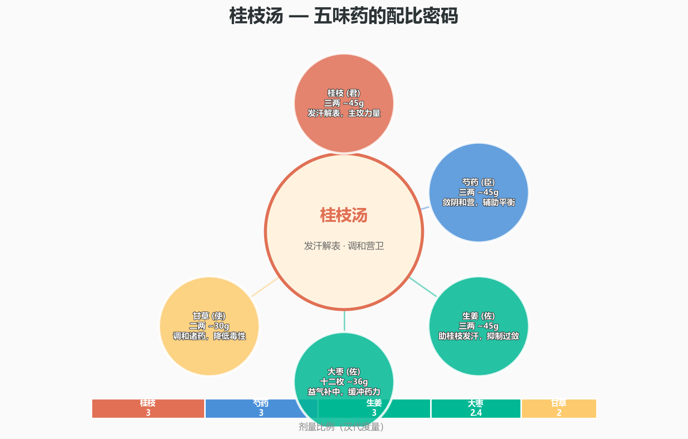
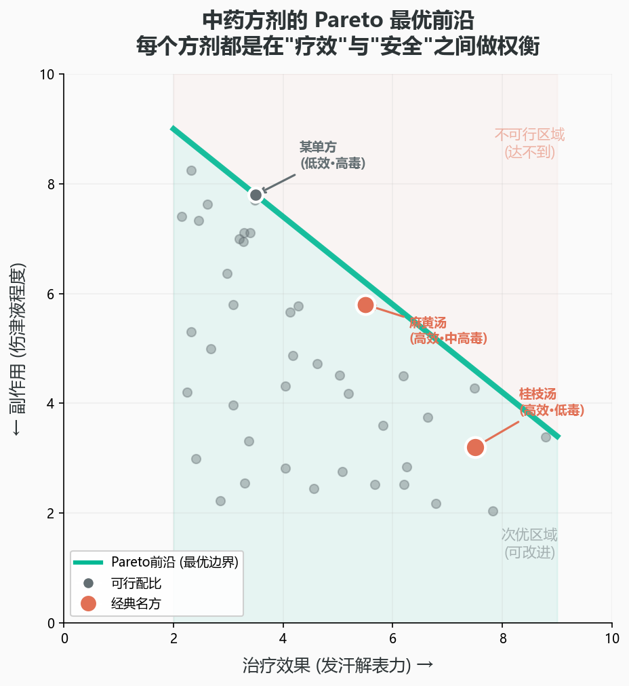
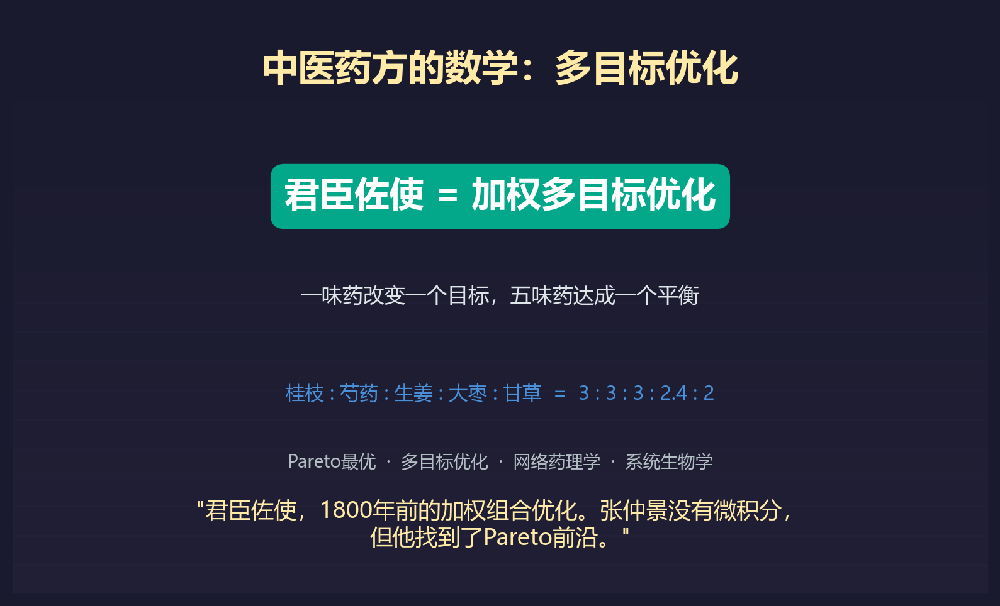

1800年前的药方，藏着一个多目标优化算法
你有没有看过一张中药方？
桂枝、芍药、生姜、大枣、甘草。五味药，各有一个精确的剂量——三两、三两、三两、十二枚、二两。
这就是桂枝汤。公元200年左右，张仲景把它写进了《伤寒杂病论》。1800年后，它依然是中医方剂学里教的第一张方子，也是临床应用最广的方子之一。
但有一个问题，1800年来很少被问过：为什么恰好是这五味？为什么恰好是这个比例？
桂枝再多一两会怎样？芍药再减一两会怎样？把生姜换成干姜行不行？
答案是：张仲景在不经意间，解决了一个多目标优化问题。他在没有微积分、没有线性规划、甚至没有代数的时代，凭借"试错+经验归纳"，找到了一个在多维约束空间里落在Pareto前沿上的配比。
这不是在神化中医。恰恰相反——这是用数学把中医的可量化内核拆解给你看。

在开始之前，先搞清三件事
第一，任何一个多味药的方剂，本质上是一个多目标优化问题。你要同时追求多个目标：最大化疗效、最小化毒性、平衡各药之间的协同与拮抗。这三个目标往往互相冲突——药力猛的毒性大，毒性小的效果弱。
第二，在多目标优化里，不存在"唯一最优解"。只存在Pareto最优解集——一组"在不损害任何一个目标的前提下，无法再提升另一个目标"的状态。换句话说，如果你要疗效更强，就必须接受毒性更大；如果你要更安全，就必须接受效力打折扣。没有"既要又要"的免费午餐。
第三，中医的君臣佐使原则，用数学的语言翻译过来就是：加权多目标优化。君药是"主目标"，权重最大；臣药是"辅助目标"，权重次之；佐药处理"约束条件"，使药负责"全局平衡"。

桂枝汤的数学翻译
让我们做一个思想实验。把桂枝汤翻译成数学语言：
- 君药——桂枝（三两）：主攻"解表散寒"。这是优化的主目标函数——权重最大。
- 臣药——芍药（三两）：辅助调和营卫，同时制约桂枝的燥热。这是辅助目标。
- 佐药——生姜（三两）：助桂枝解表。处理协同约束。
- 佐药——大枣（十二枚）：补中益气，缓冲药力。处理耐受约束。
- 使药——甘草（二两）：调和诸药，harmonize全局。这是全局平衡项。
在数学上，这就是一个加权多目标优化问题：
min F(x) = w₁·f₁(x) + w₂·f₂(x) + w₃·f₃(x)
其中 f₁=解表散寒（疗效），f₂=毒性，f₃=各药间拮抗作用
张仲景没有显式地解过这个优化问题。但他通过千百年来的临床反馈——一个天然的"梯度下降"过程——逐步逼近了那个最优配比。
什么是Pareto前沿？
意大利经济学家Vilfredo Pareto在1906年提出了一个概念：当一个系统有多个互相冲突的目标时，最优解不是一个点——而是一条前沿面（frontier）。
在Pareto前沿上的每一个点，都具有这样的性质：你无法在不损害某个目标的前提下，改善另一个目标。
桂枝汤的配比，可以说是在"最大疗效 vs 最小毒性"这个二维空间中，找到了人类经验所能逼近的Pareto前沿上的一个点。三两三两三两十二枚二两——这个看似随意的组合，是1800年临床数据在隐式地做梯度下降后收敛到的结果。

今天我们能用数学做什么？
现代计算药理学已经开始用这套数学工具来研究中药：
- 网络药理学：把每味药的化合物→靶点→通络画成网络图，用图论分析方剂的作用机制。
- 分子对接模拟：用计算机模拟药物分子和蛋白质受体的结合，量化"疗效"这个模糊概念。
- 多目标优化算法：用遗传算法、粒子群优化等工具，在计算机中搜索更优的配比组合。
有意思的是：现代的计算机优化算法找到的"最优配比"，常常和历史验方惊人接近。这反过来验证了：那些流传千年的方子，确实是某种"自然计算"的产物。
1800年前，张仲景没有计算器、没有微积分、没有Pareto最优的概念。但他有一个世界上最强大的优化器——临床实践中的试错反馈循环。而这个反馈循环，恰好等价于一个分布式梯度下降算法。每一代医生的每一次"调方"，都是这个算法的一次迭代。1800年，数万次迭代——收敛到了一个落在Pareto前沿上的点。